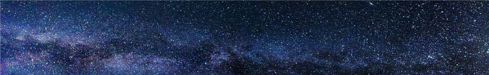

Az Astryx azért jött létre, hogy a tudományt közelebb hozza az emberekhez szórakoztató és látványos formában. Kezdetben kisebb előadásokat tartottunk, mára pedig egy olyan planetáriummá fejlődtünk, amely családok, diákok és az űrkutatás rajongóinak kedvelt célpontja lett. Folyamatosan frissülő műsoraink garantálják, hogy minden látogatás új felfedezéseket tartogat.
Büszkék vagyunk arra, hogy intézményünk nemcsak oktatási központként, hanem közösségi térként is funkcionál, ahol az űr iránt érdeklődők megoszthatják egymással tapasztalataikat és legújabb észleléseiket. Legyen szó iskolai csoportról, baráti társaságról vagy egyéni felfedezőről, az Astryx kapui mindenki előtt nyitva állnak, aki szeretne egy kicsit közelebb kerülni a csillagokhoz.